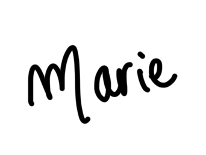

Vous avez des difficultés pour lire ce mail ? Consultez la version en ligne.
Bonjour,
J'espère que tu vas bien et que tu vois enfin le bout de l'hiver ! Pour ma part, j'attends avec impatience le 8 mars, que je passerai à Mexico cette année pour la première fois.
Je suis d'autant plus impatiente que cette année, pour la Journée Internationale des Droits des Femmes, j'ai décidé de me lancer un défi : créer et réaliser en 15 jours une œuvre d'art originale autour de cet événement, et lever des fonds pour mon association “T'as pensé à… ?”.
Depuis des années, je crée des affiches d'art qui mêlent collage, dessin et citations de mes livres de chevet, souvent pour visibiliser les causes qui me tiennent à cœur. Je me demande depuis un moment comment lier cette activité avec celles de mon association : ce projet est donc tout trouvé !
Je vais créer cette œuvre sous tes yeux pendant les 15 prochains jours (si ce n'est pas encore le cas, suis-moi sur Instagram pour suivre le processus de création). En participant à la collecte mise en place pour l'occasion, tu entrs dans un tirage au sort pour gagner un exemplaire de cette série limitée ET tu soutiens directement les actions de tpà.
Découvre la vidéo de présentation du projet 👇
En attendant ces dates, j'ai une question pour toi :
As-tu déjà ressenti ce paradoxe : devoir tout gérer au quotidien et, malgré cela, avoir l'impression de ne jamais en faire assez ?
Si c'est le cas, l'article qui suit va t'intéresser. Bonne lecture !
Avez-vous déjà ressenti ce paradoxe : devoir tout gérer au quotidien et, malgré cela, avoir l'impression de ne jamais en faire assez ?
C'est une sensation familière pour beaucoup, et en particulier pour les femmes. La charge mentale, cette gestion invisible des tâches du quotidien, s'accompagne souvent d'un poids supplémentaire : la culpabilité. Une double injonction s'installe alors. D'un côté, la culpabilité de tout assumer et de reproduire des rôles genrés ; de l'autre, celle de ne pas en faire assez dès que l'on tente de déléguer ou de relâcher la pression.
Ces injonctions contradictoires restent omniprésentes. Travailler, prendre soin du foyer, penser à tout, jongler avec les emplois du temps… Et quand on essaie de relâcher la pression, une petite voix intérieure (voir, régulièrement, les voix des autres) insinue : "Suis-je une bonne mère, une bonne partenaire, une bonne employé·e ?"
Ce tiraillement n'est pas anodin. Il alimente la fatigue, affecte l'équilibre personnel et professionnel et freine même les carrières. La charge mentale ne s'arrête pas à la maison : elle déborde au travail. Qui ne s'est jamais surpris à penser à la liste des courses en pleine réunion ? Ou à s'interrompre au milieu d'un mail pour programmer un rappel pour le rendez-vous médical du petit dernier ?
Ce phénomène ne touche pas que les individus (loin de là) : il a aussi des conséquences collectives. Fatigue chronique, baisse de concentration, stress accru… Au travail, cela peut se traduire par une productivité moindre (encore que : on a déjà l'habitude de travailler "normalement", y compris avec des règles douloureuses, alors la baisse de productivité se discute. Celle du bien-être, non.) et des inégalités qui se perpétuent.
Un DRH me confiait récemment après un atelier : "Je savais que la charge mentale pesait sur mes collaboratrices, mais pas à ce point. Je serais épuisé si je devais gérer tout ça en plus de mon travail !"
Les entreprises et organisations commencent à prendre conscience de cet enjeu, mais il reste encore largement absent des discussions sur l'égalité et l'inclusion (parce que ça relève "du privé"). Pourtant, comprendre et agir sur ces dynamiques, c'est favoriser un environnement plus sain pour tout le monde.
Que ce soit à titre individuel ou dans un cadre collectif (entreprise, association, famille), quelques actions peuvent faire la différence :
Ton avis m'intéresse ! Penses-tu que les entreprises ont un rôle à jouer dans la gestion de la culpabilité liée à la charge mentale ?
A très bientôt 😊
PS : Pour participer à la collecte et tenter de remporter une affiche d'art originale, c'est par ici ! Et pensez à la partager avec votre entourage pour soutenir mon travail.

Conférencière & Consultante
Présidente · Association tpà
marievialaret.com
PS : Tu as aimé lire ce mail ? Partage-le à un·e ami·e et invite-le/la à s'inscrire !